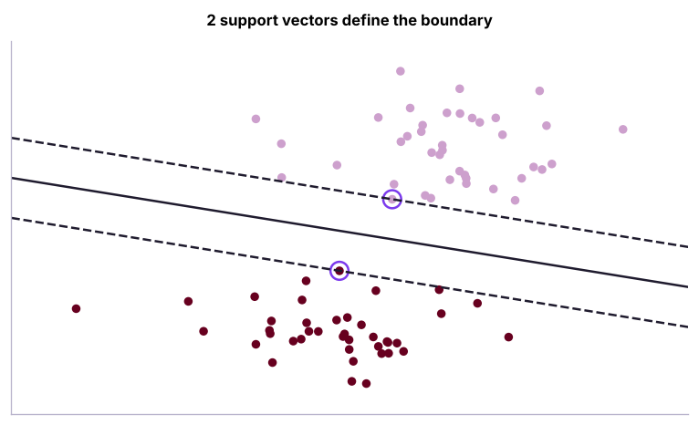
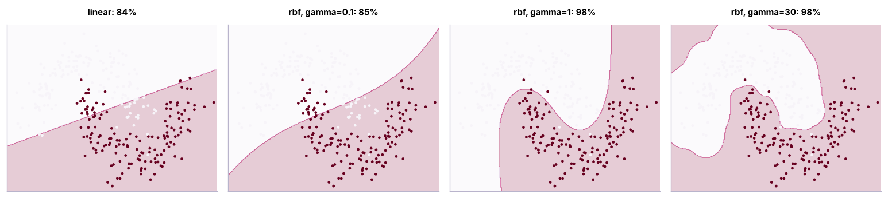
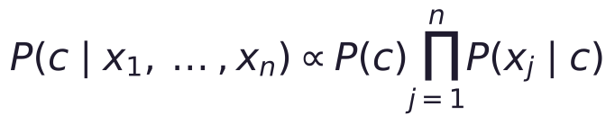

Support Vector Machines and Naive Bayes
Two classic classifiers with very different ideas. SVMs find the widest margin between classes, use soft margins (C) and kernels (RBF, polynomial) for non-linear boundaries, and need scaling; Naive Bayes applies Bayes' theorem with an independence assumption and is a fast, strong baseline for text. Includes SVR, probability calibration and when to choose each.
- Explain maximum-margin classification, support vectors and the role of C
- Use linear and RBF kernels and tune C and gamma
- Apply SVR for regression and know SVM scaling and size limits
- Explain Naive Bayes with Bayes' theorem and its independence assumption
- Build Gaussian and multinomial Naive Bayes models, including a text classifier
Support vector machines: the widest street
Among all lines (hyperplanes) that separate two classes, an SVM picks the one with the largest margin: the widest "street" between the classes. Only the points on the edge of the street, the support vectors, determine it.

Soft margin: the C parameter
Real data overlap, so SVMs allow some points inside the margin or on the wrong side, with a penalty controlled by C:
| C | Margin | Behaviour |
|---|---|---|
| Small (0.01) | Wide | Tolerates errors: simpler, more bias |
| Large (100) | Narrow | Tries to classify every point: complex, more variance |
Kernels: non-linear boundaries
The kernel trick computes similarities as if the data were mapped into a higher-dimensional space where a straight separator exists, without computing that space explicitly.

| Kernel | Use | Key parameters |
|---|---|---|
linear |
Many features (text), linearly separable data | C |
rbf (Gaussian) |
Default for non-linear problems | C, gamma |
poly |
Polynomial interactions | degree, C |
Large gamma makes each point's influence very local (wiggly boundary, overfitting); small gamma gives smooth boundaries.
SVM on the Bank Loans data
from sklearn.model_selection import train_test_split, GridSearchCV, StratifiedKFold, cross_val_score
from sklearn.pipeline import make_pipeline
from sklearn.preprocessing import StandardScaler
from sklearn.linear_model import LogisticRegression
from sklearn.metrics import roc_auc_score
b = pd.read_csv("bank_loans.csv").dropna(subset=["default"])
feats = ["age", "ed", "employ", "address", "income", "debtinc", "creddebt", "othdebt"]
Xb, yb = b[feats], b.default.astype(int)
Xtr, Xte, ytr, yte = train_test_split(Xb, yb, test_size=0.3, stratify=yb, random_state=42)
cv = StratifiedKFold(5, shuffle=True, random_state=0)
gs = GridSearchCV(make_pipeline(StandardScaler(), SVC(kernel="rbf")), {"svc__C": [0.1, 0.3, 1, 3, 10], "svc__gamma": [0.003, 0.01, 0.03, 0.1, 0.3]}, cv=cv, scoring="roc_auc", n_jobs=-1).fit(Xtr, ytr)
print("best:", gs.best_params_, f"| CV AUC {gs.best_score_:.3f} | test AUC {roc_auc_score(yte, gs.decision_function(Xte)):.3f}")
lin = make_pipeline(StandardScaler(), SVC(kernel="linear", C=0.1)).fit(Xtr, ytr)
print(f"linear SVM test AUC {roc_auc_score(yte, lin.decision_function(Xte)):.3f} | logistic regression {roc_auc_score(yte, make_pipeline(StandardScaler(), LogisticRegression()).fit(Xtr, ytr).predict_proba(Xte)[:, 1]):.3f}")best: {'svc__C': 3, 'svc__gamma': 0.003} | CV AUC 0.788 | test AUC 0.809
linear SVM test AUC 0.813 | logistic regression 0.822SVMs output decision scores, not probabilities. SVC(probability=True) adds Platt scaling (slower); CalibratedClassifierCV is the general tool.
Support vector regression
h = pd.read_csv("house_prices.csv").dropna(subset=["area_sqft"]); h = h[h.price_lakh.between(5, 300)]
hf = ["area_sqft", "bedrooms", "bathrooms", "age_years", "distance_to_center_km", "parking"]
from sklearn.metrics import mean_absolute_error
a, bq, c, d = train_test_split(h[hf], h.price_lakh, test_size=0.2, random_state=0)
svr = make_pipeline(StandardScaler(), SVR(kernel="rbf", C=100, epsilon=2, gamma=0.05)).fit(a, c)
print(f"SVR test MAE {mean_absolute_error(d, svr.predict(bq)):.2f} lakh")SVR test MAE 10.41 lakh
SVR fits a tube of width ε around the data and ignores errors inside it.
SVM practicalities
- Always scale features.
- Kernel SVMs scale roughly O(n²)–O(n³): fine for thousands of rows, slow beyond ~100,000. Use
LinearSVC,SGDClassifier(loss="hinge")or kernel approximations (Nystroem) for big data. - Strong for high-dimensional, small-to-medium data (text, genomics, image features).
Naive Bayes
Naive Bayes applies Bayes' theorem (ML lesson 2) and assumes features are conditionally independent given the class:

The assumption is rarely true ("naive"), yet the classifier often works well because it only needs the ranking of classes to be right.
| Variant | Features | Typical use |
|---|---|---|
GaussianNB |
Continuous, roughly normal | Quick baseline on numeric data |
MultinomialNB |
Counts (word counts) | Text classification, spam |
BernoulliNB |
Binary (word present/absent) | Short texts |
ComplementNB |
Counts, imbalanced classes | Text with skewed classes |
from sklearn.naive_bayes import GaussianNB, MultinomialNB, ComplementNB
gnb = GaussianNB().fit(Xtr, ytr)
print(f"Gaussian NB on bank loans: test AUC {roc_auc_score(yte, gnb.predict_proba(Xte)[:, 1]):.3f} | class priors {gnb.class_prior_.round(3)}")Gaussian NB on bank loans: test AUC 0.797 | class priors [0.678 0.322]
Text classification with multinomial Naive Bayes
from sklearn.feature_extraction.text import CountVectorizer, TfidfVectorizer
from sklearn.metrics import classification_report, accuracy_score
rv = pd.read_csv("customer_reviews.csv")
print(rv.shape, rv.sentiment.value_counts().to_dict()); print(rv.review_text.sample(3, random_state=1).tolist())
Rtr, Rte, rtr, rte = train_test_split(rv.review_text, rv.sentiment, test_size=0.25, stratify=rv.sentiment, random_state=0)
nb = make_pipeline(CountVectorizer(ngram_range=(1, 2), min_df=2), MultinomialNB(alpha=0.5)).fit(Rtr, rtr)
print(f"multinomial NB accuracy {accuracy_score(rte, nb.predict(Rte)):.3f}")
print(classification_report(rte, nb.predict(Rte), digits=3))
vec, clf = nb[0], nb[-1]; vocab = np.array(vec.get_feature_names_out())
for i, cls in enumerate(clf.classes_):
lift = clf.feature_log_prob_[i] - clf.feature_log_prob_.mean(axis=0)
print(f"most indicative of {cls:8s}:", vocab[np.argsort(-lift)[:6]].tolist())
print(nb.predict(["battery died after two days, very disappointed", "excellent sound and great value", "it is okay for the price"]))(3000, 8) {'positive': 1589, 'negative': 964, 'neutral': 447}
['Delivered on the expected date', 'Nothing special, does the job.', 'Very disappointed. The hinge broke within weeks, too expensive compared to rivals, the box arrived super damaged though the bass is rich']
multinomial NB accuracy 0.940
precision recall f1-score support
negative 0.978 0.938 0.958 241
neutral 0.845 0.830 0.838 112
positive 0.944 0.972 0.958 397
accuracy 0.940 750
macro avg 0.923 0.913 0.918 750
weighted avg 0.940 0.940 0.940 750
most indicative of negative: ['worst purchase', 'worst', 'ever', 'purchase ever', 'regret', 'regret buying']
most indicative of neutral : ['is fine', 'it is', 'fine', 'mixed', 'feelings so', 'feelings']
most indicative of positive: ['superb product', 'not bad', 'bad', 'at all', 'bad at', 'loved it']
['negative' 'positive' 'neutral']Notice that "bad" is one of the strongest positive indicators: in these reviews it mostly appears in "not bad at all". Word pairs (ngram_range=(1, 2)) let the model learn such negations; single words alone would get them wrong. The neutral class is hardest, because neutral reviews mix praise and complaints.
svm_text = make_pipeline(TfidfVectorizer(ngram_range=(1, 2), min_df=2, sublinear_tf=True), LinearSVC(C=0.5)).fit(Rtr, rtr)
print(f"TF-IDF + linear SVM accuracy {accuracy_score(rte, svm_text.predict(Rte)):.3f}")TF-IDF + linear SVM accuracy 0.947
Naive Bayes and linear SVMs on TF-IDF were the standard text classifiers before deep learning, and they are still excellent fast baselines (lesson 25 and the GenAI track go further).
When to choose which
| Situation | Good choice |
|---|---|
| Small/medium data, complex boundary, scaled numeric features | RBF SVM |
| Very many sparse features (text) | Linear SVM, logistic regression, multinomial NB |
| Need a fast baseline, tiny training time, streaming updates | Naive Bayes (partial_fit) |
| Need calibrated probabilities | Logistic regression (or calibrate SVM/NB) |
| Large tabular data | Gradient boosting |
Summary
- SVMs maximise the margin; support vectors define the boundary; C trades margin width for training errors.
- Kernels (RBF, polynomial) give non-linear boundaries; gamma controls how local each point's influence is; always scale.
- SVMs give scores, not probabilities (calibrate); kernel SVMs are slow on very large data.
- Naive Bayes multiplies class-conditional probabilities under an independence assumption; it is fast and strong for text.
- TF-IDF + linear SVM or multinomial NB are classic, competitive text classifiers.
1. What are support vectors?
2. A larger C in an SVM means…
3. What does a very large gamma in an RBF SVM tend to cause?
4. Why is Naive Bayes called "naive"?
5. Which Naive Bayes variant suits word counts?
6. Which step is essential before training an RBF SVM?
(1) Tune C and gamma for an RBF SVM on the telecom churn data (one-hot + scale) and compare with logistic regression. (2) Train BernoulliNB on the reviews with binary word features. (3) Use CalibratedClassifierCV on the linear SVM text model to get probabilities.
Show solution
from sklearn.compose import ColumnTransformer
from sklearn.preprocessing import OneHotEncoder
from sklearn.naive_bayes import BernoulliNB
from sklearn.calibration import CalibratedClassifierCV
tc = pd.read_csv("telecom_churn.csv"); Xc = tc.drop(columns=["customer_id", "churn", "total_charges"]); yc = (tc.churn == "Yes").astype(int)
pre = ColumnTransformer([("n", StandardScaler(), ["senior_citizen", "tenure_months", "monthly_charges", "support_calls"]), ("c", OneHotEncoder(), ["contract", "internet_service", "payment_method"])])
g = GridSearchCV(make_pipeline(pre, SVC()), {"svc__C": [0.1, 1, 10], "svc__gamma": [0.01, 0.05, 0.2]}, cv=5, scoring="roc_auc").fit(Xc, yc); print(g.best_params_, g.best_score_)
print(accuracy_score(rte, make_pipeline(CountVectorizer(binary=True), BernoulliNB()).fit(Rtr, rtr).predict(Rte)))
cal = make_pipeline(TfidfVectorizer(ngram_range=(1, 2)), CalibratedClassifierCV(LinearSVC(), cv=5)).fit(Rtr, rtr); print(cal.predict_proba(Rte[:3]).round(2))Q: Explain the kernel trick. It lets an algorithm that depends only on dot products work in a high-dimensional feature space by computing a similarity function (kernel) directly in the original space.
Q: SVM vs logistic regression? Both can learn linear boundaries; logistic regression gives probabilities and optimises log loss; SVMs maximise the margin with hinge loss and extend to non-linear boundaries with kernels, but scale worse to large datasets.
Q: Why does Naive Bayes work well for spam detection despite its assumption? Classification only needs the correct class to have the highest score; with many weakly informative words, the independence errors largely cancel out, and the model is fast and robust with little data.
Practise more online
Free, trusted places to test yourself on this topic. Links open the original site in a new tab.